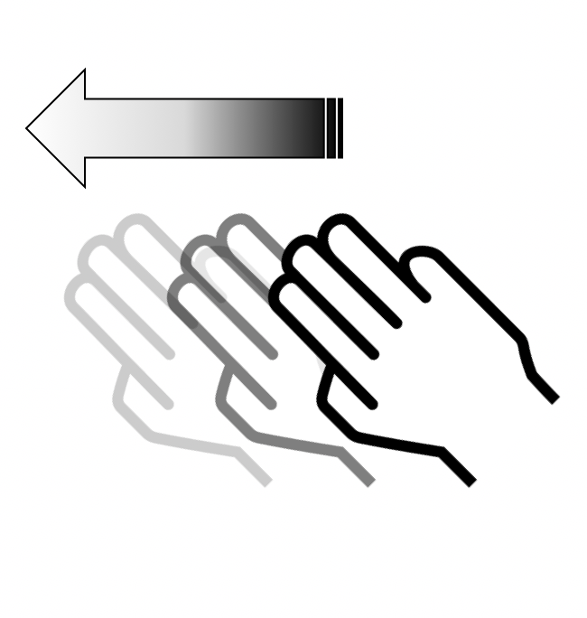

Guide d'utilisation de VoiceOver
VoiceOver est un lecteur d’écran intégré qui décrit à haute voix les éléments qui apparaissent sur l’écran de votre téléphone. Il est gratuit et permet à un utilisateur non ou mal voyant, dyslexique et illettré de pouvoir vocaliser tous les éléments visibles contenus dans la page. Un outil comme VoiceOver est appelé indifféremment lecteur d'écran ou synthèse vocale, même si un lecteur d'écran est en fait un logiciel associé à une synthèse vocale.
Lorsque VoiceOver est activé, les gestes standards effectués sur l’écran tactile donnent des résultats différents ; en outre, des gestes supplémentaires permettent de se déplacer à l’écran et de contrôler des éléments sélectionnés. VoiceOver comprend des gestes de toucher et de balayage à deux, trois et quatre doigts. Nous décrirons ici les gestes de base pour une utilisation courante de VoiceOver.
Gestes de bases
-

Se déplacer avec un doigt sur l'écran
Explorer l'écran et entendre la vocalisation de l'élément qui est touché.

Double-cliquer n'importe où sur l'écran
Ouvrir ou activer l'élément qui a été touché (vocalisé) en dernier.
-


Slider vers le haut ou le bas en utilisant trois doigts
Se déplacer verticalement sur une liste ou sur une page à condition qu'elle soit sélectionnée. Correspond à un slide vertical.
-


Slider vers la gauche ou la droite en utilisant trois doigts
Changer de page ou d'écran quand c'est possible. Correspond à un slide horizontal.

Slider vers la droite en utilisant un doigt
Déplacer le focus VoiceOver sur le prochain élément.
-

Slider vers la gauche en utilisant un doigt
Déplacer le focus VoiceOver sur l’élément précédent.

Slider vers le haut en utilisant un doigt
Permet d’augmenter la valeur d’un élément ajustable.
-

Slider vers le bas en utilisant un doigt
Permet de diminuer la valeur d’un élément ajustable.
These images are licensed under a Creative Commons Share Alike 2.0 license. Photo credit: openexhibits
Pour plus d’informations sur VoiceOver et une description détaillée des fonctionnalités qu’il propose, nous vous invitons à lire la documentation officielle d'Apple sur VoiceOver.